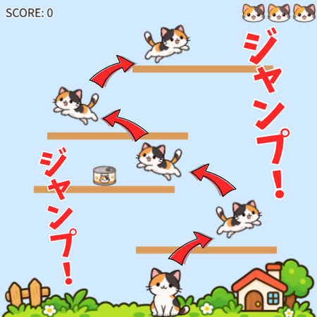
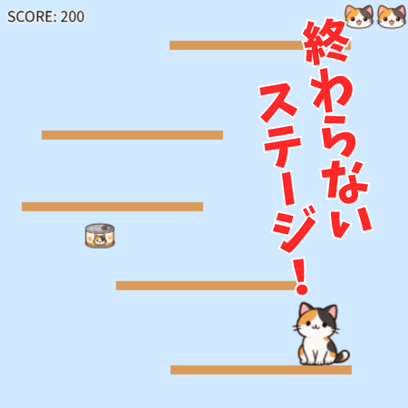
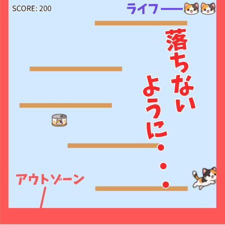
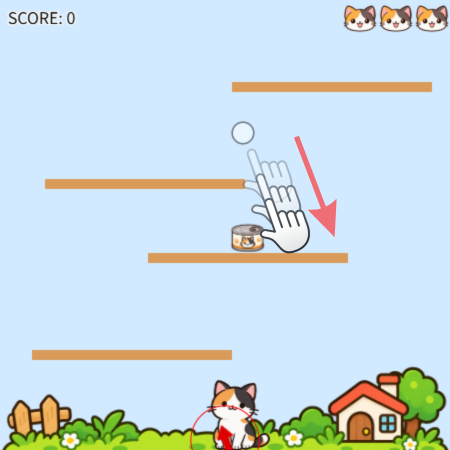

ゲーム説明
操作方法
■ゲーム説明
ジャンプで足場を登って高得点を目指そう！

画面内の一番上の足場に乗るとさらに上の足場が出現！
どんどん上を目指そう！

左右、下の画面外に行ってしまうとアウト！
※上方向ではアウトになりません。
ライフが1つ減り、同じ場所からやり直しになります。
ライフの数は右上に顔のマークで表示されます。
ライフがない状態でアウトになるとゲームオーバーです。

■操作方法
画面上を引っ張るようにドラッグ/スワイプすると猫がジャンプします。
ジャンプする方向はドラッグ/スワイプしている間、猫の上の矢印で確認できます。
ドラッグ/スワイプする距離が長いと猫がより高く、強くジャンプします。
ジャンプする強さはドラッグ/スワイプしている間、矢印の大きさ・矢印の周りの円の大きさで確認できます。
